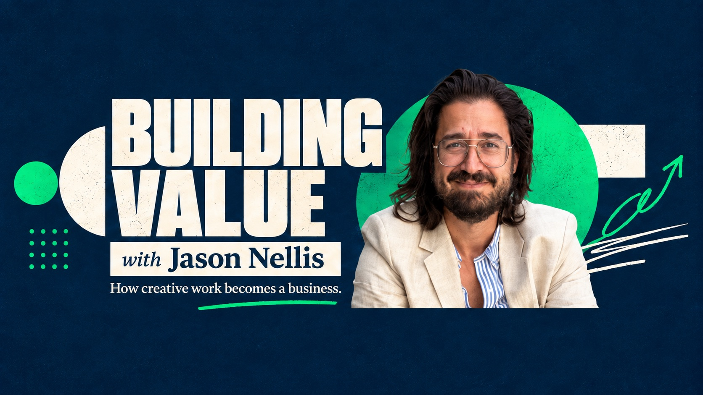

Building Value is coming back.
How creative work becomes a business.
The show where I sit down with the operators, founders, and creators turning creative work into real businesses — and get specific about what actually compounds. A hundred-plus conversations in, it's being rebuilt with a new look and a sharper focus.
A hundred-plus conversations, still worth your time.
While the new season comes together, the back catalog is the best record of how I think about building, strategy, and where media is going. A few to start with:
The TikTok Magic of a Former McDonald's Chef! [Chef Mike Haracz]
A former McDonald's corporate chef on building a following on TikTok from scratch — what brands get wrong about authenticity, and how a personal voice can outperform a marketing budget.
Hulu's First PM [Betina Chan-Martin]
Hulu's first product manager on what it took to build a streaming product from zero — and the lessons from an early-stage team that don't survive the transition to scale.
100K Subs Can't Be Wrong [Ken Bolido]
Ken Bolido on the long climb to 100,000 YouTube subscribers — the strategy behind consistent growth, and why most creators quit right before it compounds.
The Value of Hard Work [Jacklyn Dallas]
Jacklyn Dallas on what "hard work" actually means when you're building a career and a brand at the same time — and why grit alone isn't the whole story.
Building something worth talking about?
If you're an operator, founder, or creator turning creative work into a real business, I'd like to hear about it — the new season is looking for guests with a point of view and the receipts to back it up.